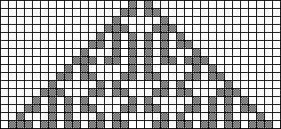

| 7. Here are the results from the first two initial conditions | |||||
| |||||
| (c) Here is the pattern growing from the superposition of these two. | |||||
|  | |||||
| (d) Comparing the pictures, we see that a cell is alive in (c) if it is alive in exactly one of (a) and (b). |
Return to Homework 9 Practice.